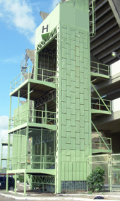
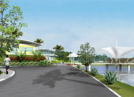
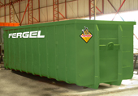

|


 |

Fergel reforma escadarias do Sambódromo em
tempo recorde para o desfile de 2008
|
A Fergel realizou em tempo recorde a
recuperação das quatro escadarias do sambódromo de Manaus. O serviço
foi contratado e iniciado apenas duas semanas antes do carnaval de
Manaus.
As escadarias, todas em estrutura
metálica e degraus concretados, não haviam sido reformadas desde a
sua construção. A corrosão era intensa e já comprometia toda a
estrutura metálica e sustentabilidade das escadas.
A Fergel assumiu o compromisso de
executar a recuperação e deixar as quatro escadas prontas para os
dias de desfile. |

CLIQUE PARA DETALHES
|
Fergel inicia os trabalhos de limpeza da
área do canteiro de obras do Parque Lagoa do Japiím
|
Em dezembro de 2007, a Prefeitura de
Manaus entregou para a Fergel a área onde será construído o Parque
Lagoa do Japiím. A obra de 12mil m² vai recuperar para a comunidade
do Bairro do Japiím uma área que estava abandonada há muito tempo. A
Fergel vai construir um campo de futebol, um auditório, quadras
poliesportivas, um passadiço sobre a lagoa artificial e urbanizar a
área que vai servir para caminhadas e atividades sociais, além de
outras benfeitorias. Segundo Rodrigo Penatti, o área estava
totalmente tomada pelo mato e destroços da antiga residência que
existia ali. Numa primeira etapa, serão realizados os trabalhos de
limpeza da área e de despoluição da lagoa. |

CLIQUE E VEJA FOTOS E
INFORMAÇÕES DO PROJETO ARQUITETÔNICO DO PARQUE
|
|
A FERGEL É
FORNECEDORA CADASTRADA DO BNDES.
Sua
empresa pode financiar qualquer produto Fergel no BNDES.


• Porque Estruturas
Metálicas ? (avaliação comparativa entre o concreto e o aço)
• Como surgiu o aço depois
do ferro
• Para que serve o aço
• Dicionário da Construção
• Tabela de peso e medidas de aço pré-moldado
• Galpões e Armazéns


• Reciclagem
• O uso do aço para a natureza
• Legislação Ambiental |
|
Coletores Industriais de Resíduos e Caçambas
são novas vedetes do Parque Industrial da Fergel
|
Atualmente, um dos principais produtos
fabricados na Fergel tem sido os coletores industriais de resíduos.
A produção tem sido satisfatória e a qualidade do acabamento, assim
como a estrutura do produto tem mantido a linha de montagem na
ativa. O empresariado gerador de resíduos do pólo industrial tem
verificado a enorme vantagem de possuir no seu ativo os coletores de
resíduos da Fergel. O custo benefício tem sido justificado. Além do
que, com a disponibilidade de caminhões adaptados para o transporte
e "basculagem", os coletores com capacidade para 30m³ surgem como
uma ótima alternativa para de transporte de cargas para o segmento
da construção. |

DOWNLOAD O FOLDER |
Fergel investe em caminhões especializados
para deslocamento de coletores e caçambas
|
A Fergel inicia 2008 com um novo sistema de transporte e deslocamento de
depósitos containeres. O sistema irá permitir tanto as funções de
carregamento, de descarregamento, e basculagem de diferentes tipos
de cargas. Um sistema hidráulico instalado sobre o chassi do veículo executa
o manuseio com o depósito
coletor. A aquisição visa principalmente a melhoria logística no deslocamento de depósitos intercambiáveis,
a flexibilização nas situações com necessidade de revezamento de
depósitos. A Fergel mantém expectativa de aquisição de outros
dois caminhões desta categoria no segundo semestre deste ano. |

VEJA AS FOTOS |
Guindaste
Hidráulico Veicular
A Fergel adquiriu um guindaste hidráulico veicular com lança de alcançe de
20 metros e capacidade de carga de 10 toneladas. O equipamento vai
melhorar e agilizar o sistema de entregas de estruturas metálicas
produzidas no parque industrial da empresa. Além de proporcionar maior
autonomia para os serviços de entrega, o sistema estará disponível para
utilização com diversos parceiros da empresa.
As obras
não param na Universidade do Amazonas
O canteiro de obras no Campus da UFAM está a mil. A Fergel já finalizou a
pilares concretadas do primeiro andar e está iniciando a segunda laje de
concreto. Na indústria o ritmo também está bem adiantado, já estão em fase
de finalização a preparação das vigas e perfis metálicas que serão
utilizados para a cobertura.
|